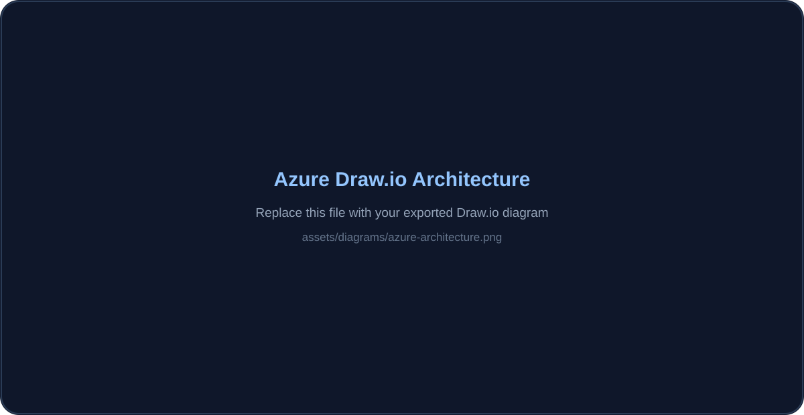

Azure Cloud Infrastructure Lab
A structured Azure lab that separates Production and Testing and combines network design, Windows/Linux compute, secure administration, VNet Peering, monitoring and managed storage with practical verification at each stage.
A small multi-environment cloud infrastructure.
The lab was designed to go beyond creating isolated Azure resources. Production and Testing were separated into their own environments, then connected through networking, virtual machines, secure administration, monitoring and storage so that each component could be configured and validated in practice.

Separate Production and Testing boundaries
Separate Resource Groups were created for the Production and Testing environments. This gave each environment a clear organizational boundary and made the resources belonging to each workload easier to identify and manage.
The point of this step was not simply naming resources differently; it established a cleaner structure before networking, compute and monitoring components were added.
- Created dedicated resource groups for Production and Testing.
- Grouped environment-specific resources under the correct boundary.
View resource configuration

VNet planning, CIDR and subnet segmentation
The Production environment uses the address space 10.0.0.0/16. Inside it, two subnets separate workloads: Fin App → 10.0.0.0/24 and Web App → 10.0.1.0/26.
A second Testing VNet uses 192.168.0.0/24. Keeping Testing in a different virtual network made it possible to practice both isolation and later cross-network communication through peering.
This part of the lab provided hands-on practice with CIDR addressing, address-space planning and subnet segmentation instead of treating VNet creation as a one-click Azure task.
View Production VNet & subnets

View Testing VNet

Mixed Windows and Linux workloads
The Production environment contains a Windows Server 2025 Datacenter VM and a Rocky Linux 9 VM. A separate Rocky Linux 9 VM was deployed in Testing.
This created a small multi-environment setup where both Windows and Linux administration could be practiced, and where connectivity could later be tested between hosts living in different virtual networks.
- Windows Server 2025 Datacenter in Production.
- Rocky Linux 9 in Production.
- Rocky Linux 9 in Testing.
View VM deployment

RDP for Windows, SSH keys for Linux
The Windows Server VM was administered through Remote Desktop Protocol. The Rocky Linux machines were accessed through SSH using key-based authentication.
Using the platform-appropriate access method made remote administration part of the lab itself. SSH key authentication was especially useful for practicing the access model commonly used with Linux servers in cloud environments.
- Opened a working RDP session to Windows Server.
- Connected to Rocky Linux through SSH key authentication.
View SSH / RDP access


Connect isolated environments deliberately
VNet Peering was configured between Production and Testing. The goal was to allow resources in the two separate VNets to communicate while still keeping the environments logically separated at the network level.
The configuration was then validated with an actual connectivity test. A successful test confirmed that the peering configuration was functional rather than merely present in the Azure Portal.
- Configured VNet Peering between Production and Testing.
- Tested connectivity across the peered networks.
- Confirmed successful communication.
View VNet connectivity test


Observe infrastructure after deployment
Azure Monitor was configured to observe VM CPU utilization. A CPU alert rule used a threshold of 0.2%, and an Azure Action Group was configured to send an email when the alert condition was triggered.
The important part was end-to-end verification: the alert was not only configured, but checked in Azure Monitor and confirmed through the received email notification. That turns the monitoring setup from configuration into evidence that the complete notification path actually worked.
- Created CPU utilization alert.
- Configured Azure Action Group.
- Triggered / verified the alert.
- Received the notification email.
View monitoring & email verification


Managed shared storage, tested from a client
An Azure Storage Account was configured with an Azure File Share. This introduced managed cloud storage as a separate infrastructure component rather than keeping all data tied to a VM.
The File Share was also mounted locally, which provided a practical access test and demonstrated how cloud-hosted shared storage can be consumed outside the Azure Portal.
- Created Azure Storage Account.
- Created Azure File Share.
- Mounted the share locally and tested access.
View storage configuration & local mount

Infrastructure becomes useful when the pieces are tested together.
The project helped connect network design, compute, secure access, monitoring and storage into one environment. More importantly, each area included a practical validation step — from SSH/RDP access and cross-VNet connectivity to alert notifications and mounted storage — reinforcing the way I want to approach DevOps work: build it, test it, investigate what happens and understand why it works.